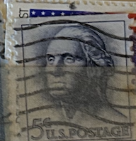
| SOURCE | TITLE| IMAGE MATCH | click to source page |
| eBay | RARE 1962 George Washington 5 cent stamp | eBay | 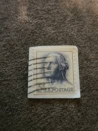 |
| Poshmark | George Washington US postage | Art | Vtg Uspostage 5c George Washington St Us President 1961197 Rare Issue | Poshmark | 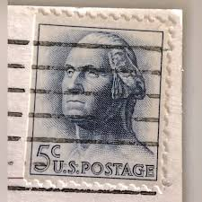 |
| Mercari | 18 Rare 1962 George Washington 5¢ stamp in | Mercari | 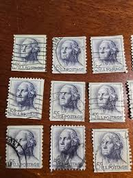 |
| eBay | 1960's George Washington 5 Cent Stamp United States Postage | eBay | 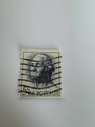 |
| eBay | Buena Park, CA Knotts Berry Farm & Ghost Town Vintage Postcard Posted 1968 | eBay | 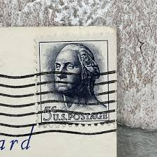 |
| eBay | George Washington 5 cent Rare Used stamp 1962 United States Postage Politicians | eBay | 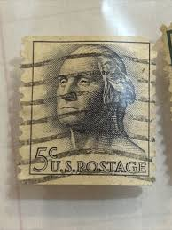 |
| 1962 Vintage George Washington 5 Cent Bleu U.S. Postage Stamp | 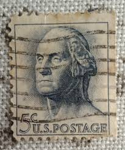 | |
| eBay | Rare 5 cents George Washington Blue used stamp | eBay | 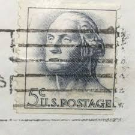 |
| eBay | Rare 1962 Washington 5 cent stamp | eBay | 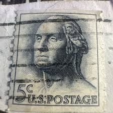 |
| Poshmark | Other | Blue George Washington 5 Cent Stamp | Poshmark | 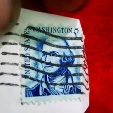 |
| eBay | Bundle Very Rare Stamps Nice Condition | eBay | 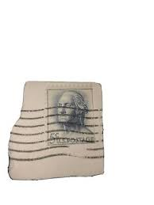 |
| eBay | TWO George Washington 5 cent Rare Used stamp 1962 United States Postage | eBay | 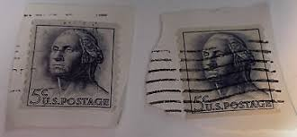 |
| eBay | Scott #1229 5c WASHINGTON Used Stamp (a12) On Paper | eBay | 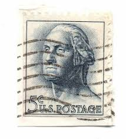 |
| eBay | Rare 1963 George Washington 5¢ Stamp Blue Gray Vintage Regular Issue Cancelled | eBay | 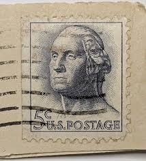 |
| Todocolección | u.s.postage, 30 cent, washington, 1922,. - Buy Antique stamps of United States on todocoleccion | 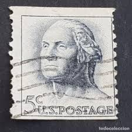 |
| eBay | 9 VINTAGE "WASHINGTON" 5 Cent US Postage Stamp #1213 used | eBay | 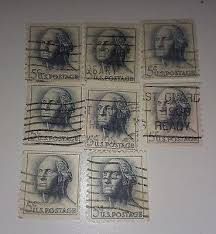 |
| eBay | George Washington 5 Cent Stamp - Blue | eBay | 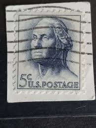 |
| eBay | Vintage US 1963 5¢ Washington Stamp | eBay | 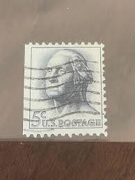 |
| eBay | Nice Vintage Used U. S. Postage 5 Cent Stamp, GOOD CONDITION – COLLECTIBLE | eBay | 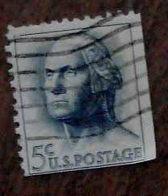 |
| Alamy | USA - CIRCA 1962: Postage stamps printed in USA, Christmas Issue, shows Wreath and Candles, circa 1962 Stock Photo - Alamy | 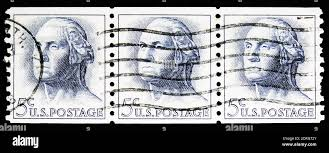 |
| Etsy | Vintage 5 Cent George Washington Stamp: 1962 USA Postage - Etsy | 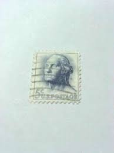 |
| eBay | George Washington 5 cent Rare vintage stamp 1962 United States Postage. | eBay | 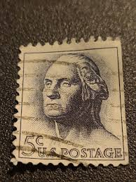 |
| eBay | George Washington 5 cent Rare Used stamp 1960's United States Postage Envelope | eBay | 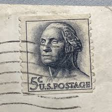 |
| eBay | Antique Vintage Collectible. George Washington 5 cent postage stamp | eBay | 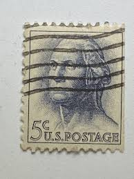 |
| eBay | 1962 George Washington 5 Cent Stamp Blue/Gray (Rare). EXM-MINT. | eBay | 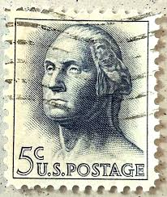 |
| eBay | Rare 1962 George Washington Blue U.S Stamp 5 cent. Hand Stamped Sold Separately | eBay | 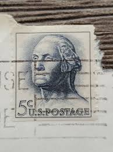 |
| eBay | USA - 1963 - George Washington - 5¢ - #3200 | eBay | 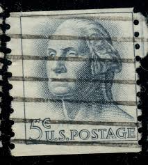 |
| Poshmark | Authentic American Heritage | Other | Rare Americans President Stamps Cent 3 Cent 4 Cent And 5cent Stamps | Poshmark | 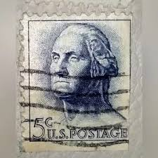 |
| eBay | George Washington 5 cent blue U. S. Postage 1967 Used & Andrew Jackson 1 Cent St | eBay | 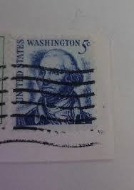 |
| eBay | 1962 George Washington US 5c Used Pair Postage Stamp - #B343 | eBay | 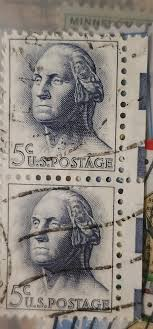 |
| Mystic Stamp | 1229 - 1962 5c George Washington, Rotary Coil, Vertical Perf 10 - Mystic Stamp Company | 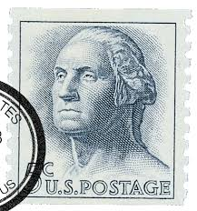 |
| eBay | STAMP US SCOTT 1229 "Washington" 5 CENT 1962 USED PAIR FANCY CANCEL | eBay | 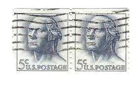 |
| eBay | STAMP US SCOTT 1229 "Washington" 5 CENT 1962 USED FANCY CANCEL WAVE | eBay | 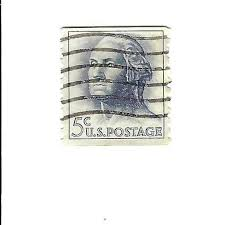 |
| eBay | STAMP SCOTT 1858 "George Mason" 18 CENT 1981 USED FANCY CANCEL HORIZ PAIR | eBay | 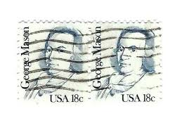 |
| B G (menotaur2) - Profile | Pinterest | 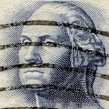 | |
| eBay | George Washington 5 cent Rare Used Cancelled stamp 1962 United States Postage | eBay | 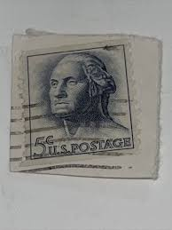 |
| eBay | 5 cent George Washington Stamp On Postcard 1965 Postmark | eBay | 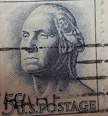 |
| eBay | George Washington 5 cent Rare Unused stamp United States Postage | eBay | 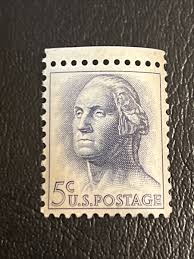 |
| eBay | George Washington 5 cent Rare Used stamp 1960's United States Postage Envelope | eBay | 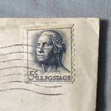 |
| eBay | Scott #1229 5c WASHINGTON Used Stamp (a7) On Paper | eBay | 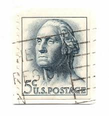 |
| eBay | USA - 1963 - George Washington - 5¢ - #3206 | eBay | 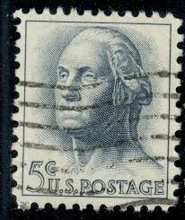 |
| acervantes.com | Vintage stamps - teens.acervantes.com | 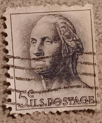 |
| eBay | U.S. Postage Stamp ~ George Washington ~ 5¢ Blue Stamp ~ c.1962 ~ A115 | eBay | 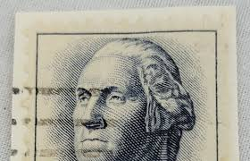 |
| eBay | Machado Gardens Kealakekua Kona HI Chrome Postcard A1200084117 | eBay | 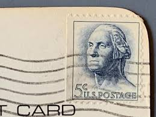 |
| eBay | US Stamp George Washington 5c Used Wave Cancel 1213 | eBay | 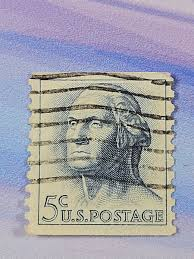 |
| eBay | 9 VINTAGE "WASHINGTON" 5 Cent US Postage Stamp #1213 used | eBay | 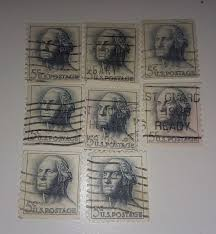 |
| eBay | 1967 GEORGE WASHINGTON 5 CENT BLUE | eBay | 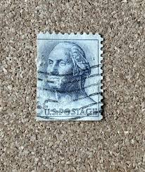 |
| ebid.net | US Stamp #1213 used: 1962 5c George Washington [4] on eBid United States | 142084445 | 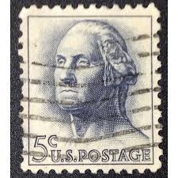 |
| eBay | US Stamp George Washington 5c Used Bar Cancel 1213 | eBay | 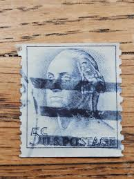 |
| eBay | 1962 George Washington US 5c 5 Cent Postage Stamp | eBay | |
| eBay | USA - 1963 - George Washington - 5¢ - #3210 | eBay | |
| eBay | 5 cents George Washington postage mark used stamp Rare | eBay | |
| eBay | Vintage Rare 5 Cent George Washington Blue Stamp With 1965 Postmark, Used | eBay | |
| eBay | 1962 George Washington 5 Cent Postage Stamp (Rare) United States | eBay | |
| eBay | George Washington 5 cent stamp 1963 United States Postage NOT BLUE used uncertif | eBay | |
| eBay | USA - 1963 - George Washington - 5¢ - #3214 | eBay | |
| eBay | USA - 1963 - George Washington - 5¢ - #3204 | eBay | |
| eBay | Scott #1229 5c WASHINGTON Used Stamp (a1) On Paper | eBay | |
| eBay | Vintage 1965 Winter Haven Florida Postcard Landmark Motor Lodge | eBay | |
| eBay | US Postage Stamp 1962 5c George Washington Scott# 1213 Used On Paper - #2973 | eBay |